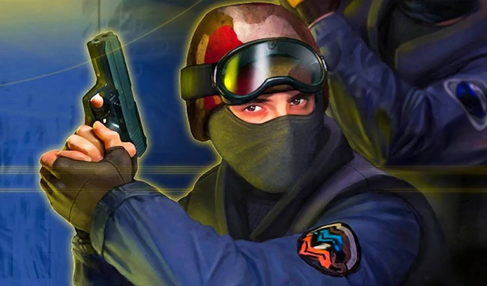
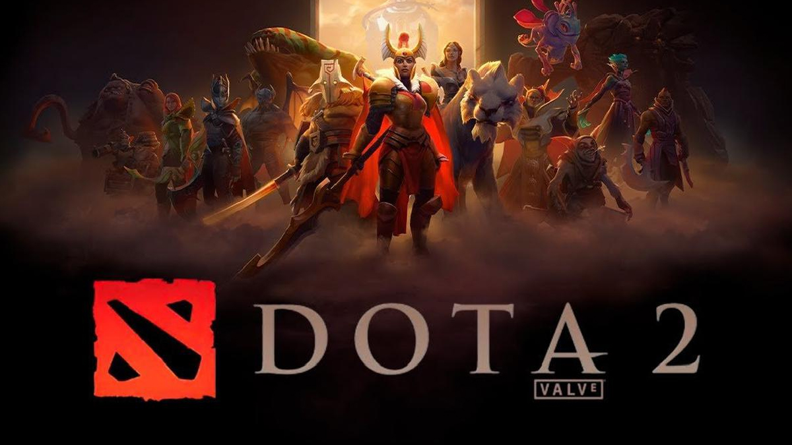
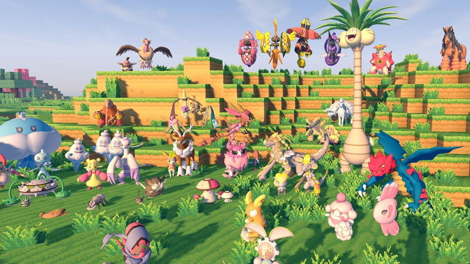
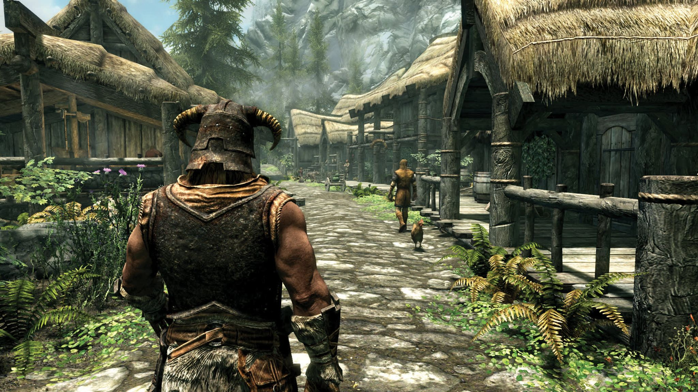
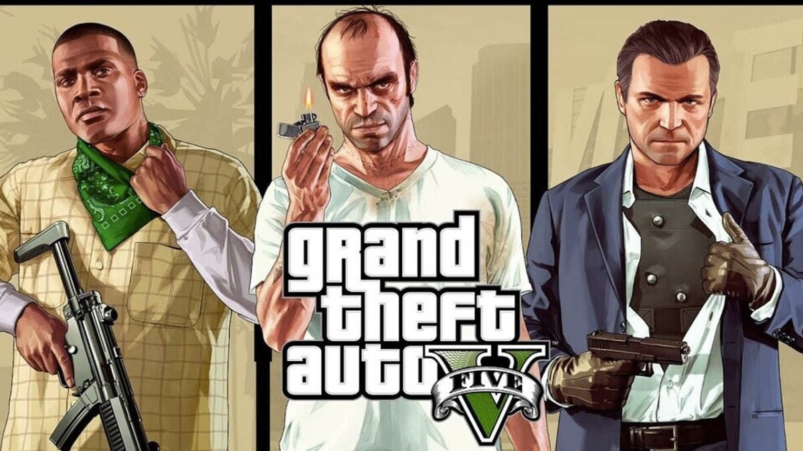

🎮 Ejemplos Famosos de Mods en Videojuegos
Los mods han cambiado la historia de muchos videojuegos. Aquí algunos de los más conocidos:
- Counter-Strike: comenzó como un mod de Half-Life y se convirtió en un fenómeno mundial.

- DotA: un mod de Warcraft III que dio origen a todo el género MOBA.

- Pixelmon: un mod de Pokémon dentro de Minecraft ¿Por qué no?.

- Skyrim Mods: desde mejoras gráficas hasta misiones completamente nuevas.

- GTA V Mods: permiten desde autos personalizados hasta jugar como superhéroes.
